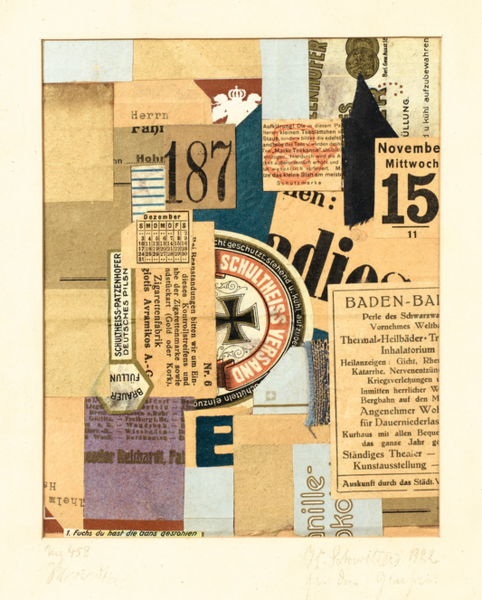
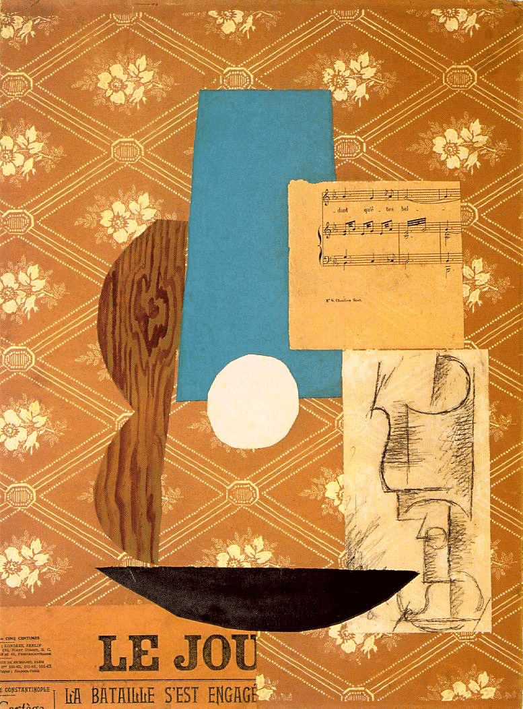
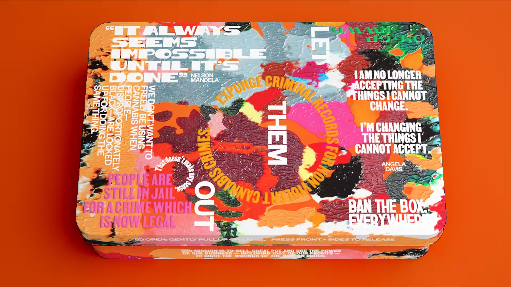
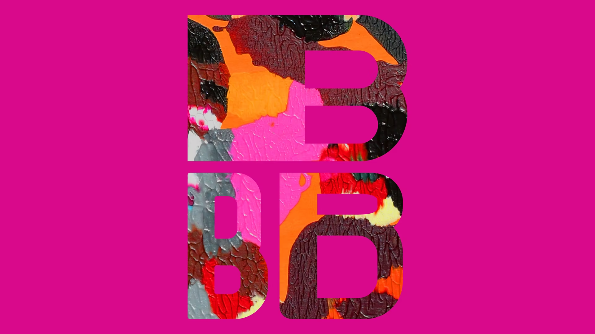

Texturizer
Objective
Remix your design from the previous lesson to include photographs and textures. Imbue the work with a sense of place and material, bringing the real world into your work.
Inspiration
](../../assets/walsh-3.png)
Jessica Walsh, Aizone campaign, 2011-14
In addition to this week’s Case Study of Jessica Walsh, consider the following examples of early collage work by Kurt Schwitters and Pablo Picasso. Both artists worked in Europe in the early Twentieth Century and helped establish the medium of paper collage within the world of fine art.
Along with George Braque, Picasso shaped the evolution of Cubist art and specifically Synthetic Cubism, which took the earlier cubist experiments of breaking down forms and depicting multiple viewpoints simultaneously, and made them flatter and bolder, more colorful and representative of the modern world. By gluing bits of newspapers and ephemera into the paintings, Picasso and Braque made the relationship between art and its surrounding world inescapable. The headlines and garbage of their time became part of the work.
Kurt Schwitters took this idea even further by creating hundreds of collages and sculptures from everyday materials. He called these collages Merz, and turned his packrat collection of detritus into an extremely early example installation art when he built an architectural sculpture in his family house in 1933. His Merzbau (”Merz-build”) was a singular example of fusing life and art, integrating works by fellow collage artists like Hannah Höch, Raoul Hausmann and Sophie Taeuber into the structures.

Kurt Schwitters, Merz 458 (1921)

Pablo Picasso, Guitar, Sheet Music and Glass (1912)
For a more contemporary example, this 2022 brand design from Eddie Opera uses an energetic paint texture as a surface element, including using masking to cut out the image into the shape of vector letterforms. (Learn how to mask in Figma.)


The use of decorative, real world textures also relates to skeuomorphism: the practice of using tactile cues in user interface design to connect digital interfaces with analogues from the physical world through metaphor. Think, floppy disk as save icon or simulating foggy glass to convey transparency. You can find many tutorials for skeuomorphic design in Figma, (involving careful use of gradients and shadows) and use these tricks to enhance the tactile feel of your work in this exercise.
Images and Text in Figma
Exercise Instructions
1. Get Some Photos
For this exercise, we’re going to remix the design you created last week — replacing the Fill color on your shapes with photographs, or layering photos and colors on top of each other.
So first, we need some photos.
Consider the shapes, feeling, and composition of your design. What textures or imagery might be related to what you already have? Write down a list of words, objects, or places that come to mind. Think of a location relevant to your list, where you can find a variety of interesting textures.
Take a field trip away from your computer and use a digital camera to photograph a variety of textures. You can also look for examples of typography or lettering that might be incorporated into the design. You could also make a rubbing and photograph it.
Transfer the photos to your computer.
2. Duplicate Last Week’s Design
In Figma, open the Shape Shifter design file from last week.
Select your Frame by clicking on the name of the frame, ensuring you have the Frame itself selected and not an element inside of the Frame. Copy the Frame (⌘+C on Mac; CTRL+C on Windows).
Open the file for this Exercise; it will appear as a separate tab.
Paste the Frame onto the Canvas (⌘+V on Mac; CTRL+V on Windows). Make sure the Frame still has your name as its label.
3. Add Photos to your Shapes
Select a Shape and change its Fill from “Color” to “Image,” then upload an image from your local folder.
You can also try adding multiple Fills to a shape, such as an Image and a Color. Change the Blend Modes or Opacity of a Fill to achieve a variety of looks. See the demo video for an examples of this.
4. Keep Going
Remix the original design as you see fit. You can crop the design or change it if you want, but try to keep some shapes consistent with the original.
In the spirit of Jessica Walsh and the Cubist collage artists above, you should add some text to the design. How could text be a part of the composition without overpowering the shapes? Does it need to legible? Text can be created in Figma or included as a photograph.
Submission
- In the Figma file, select “File » Save to Version History” to ensure your work is saved. You will be prompted to enter a description, so just write “Finished!” or whatever message you like. This action is automatically associated with your username so you don’t need to write your name.
- Export your Frame and submit it to Canvas.
Requirements
- Remix your design from the Shape Shifter exercise to include photographs and textures.
- Include decorative text as a visual shape, not as primary content to be read. (See the Cubist examples above.)